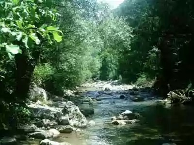

SRBIJA
Bistra planinska reka Trešnjica izvire ispod planine Povlen u zapadnom delu Srbije i posle 23 km dugog toka se uliva u reku Drinu, nedaleko od Ljubovije.
Neposredno pre ušća u Drinu, Trešnjica je izdubila nekoliko kilometara dugu krečnjačku klisuru. Duboka oko 500 m, sa uspravnim liticama, klisura na
pojedinim mestima poprima odlike kanjonske doline, naročito u zoni ušća Tribuće u Trešnicu. Na ovom mestu, dolinske strane su veoma primaknute i sa
stepenasto poređanim krečnjačkim odsecima, koji se u gornjim zonama završavaju nazupčenim grebenima.
Posebno je impozantan krečnjački odsek brda Boškovac. U celoj klisuri brojni su sipari, otvori, potkapine i različito oblikovane stene.

Najveći deo rezervata obrastaju šume i šikare crnog graba, cera, crnog bora, kleke i dr. Prisutne su i šikare grabića, graba, jasena, bukve. U spratu
grmlja se pojavljuje klen, dren, glog, trnjina, bršljan, ruj, divlja ruža i dr. U manjoj meri zastupljene su trave i livade.
U klisuri se gnezde mnoge ptice grabljivice, kao što su suri orao, vetruška, jastreb kokošar, kobac ptičar i mišar. Klisura je prepoznatljiva po
koloniji beloglavog supa, najveće ptice u ornitofauni Srbije (raspon krila 230-280 cm), koja je ovde, zahvaljujući organizovanom hranilištu, sve
brojnija i atraktivnija. Značajno je istaći da je njegova populacija prisutna jedino ovde i u klisuri reke Uvac.
Na području Trešnjice prisutno je mnogo vrsta sisara – lovne divljači (divlja svinja, lisica, veverica, zec, tvor, šumski puh…), zatim jež, vidra,
više vrsta slepih miševa i dr.
Reka Trešnjica je brza planinska reka hladne vode, relativno nezagađena, pa u njoj se naseljavaju potočna i kalifornijska pastrmka.